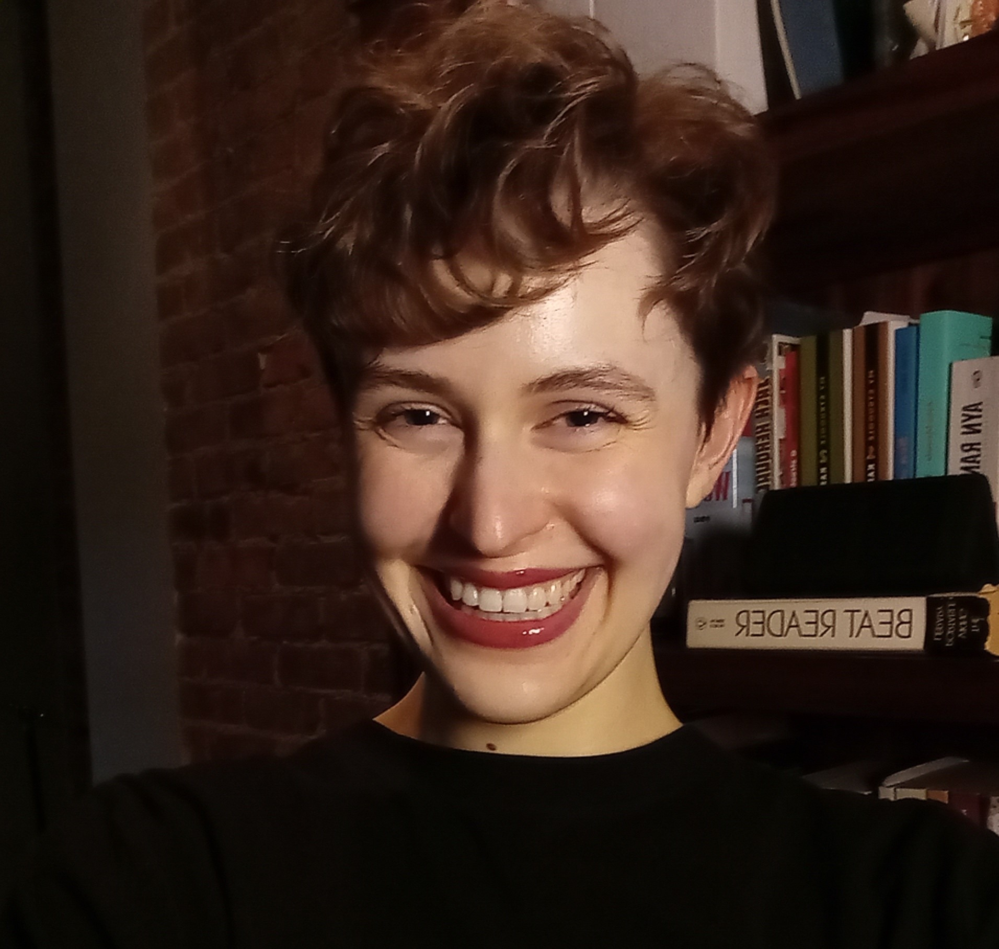

Chloe Weiers
- Ph.D. Candidate in Algebraic Cryptography
- Stevens Institute of Technology
- cweiers@stevens.edu
I completed my undergraduate studies in Mathematics and Music at Northeastern University in 2018.
I am currently a fifth year PhD candidate in Algebraic Cryptography at Stevens Institute of Technology, advised by Dr. Alexander Ushakov and Dr. Antonio Nicolosi.
My research interests are in the area of algorithmic group theory.
In particular, my PhD thesis is about the computational complexity of solving orientable and non-orientable quadratic equations in wreath products of finitely generated abelian groups.
My TA notes for CS/MA 503 (Discrete Mathematics for Cryptography) can be found here.